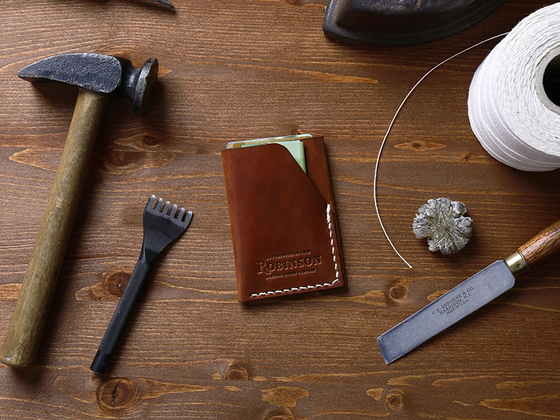
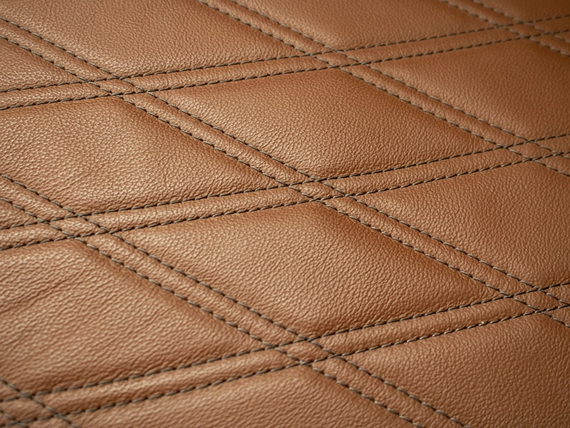
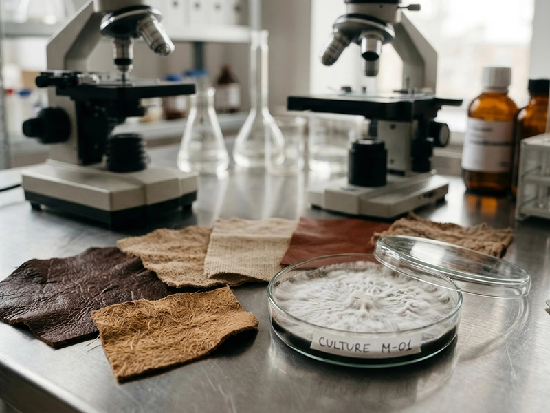
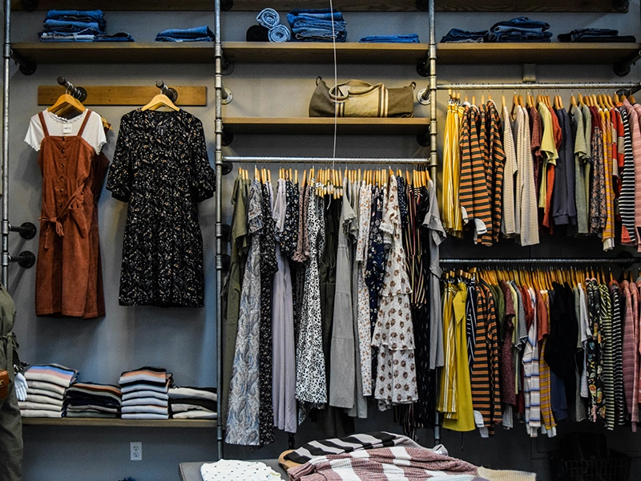

The global fashion and footwear industry is currently undergoing its most significant structural transformation since the Industrial Revolution.
This shift is characterized by a fundamental move away from the linear "take-make-waste" model toward a circular, bio-fabricated future driven by a complex interplay of regulatory mandates, psychological shifts in consumer behavior, and breakthroughs in tissue engineering and material science.
As of 2026, the market is defined by a deep economic stratification where high-quality natural materials are increasingly consolidated into the luxury tier, while the mass market navigates a volatile transition from petroleum-based synthetics to emerging bio-composites.
This report provides an exhaustive analysis of the historical, economic, and ecological factors shaping this transition, with specific focus on the rise of next-generation materials and the legislative frameworks of the European Union that are enforcing this paradigm shift.

Historical Evolution of Materials: From Survival to Social Stratification
The trajectory of human clothing is a record of technological adaptation to environmental and social pressures.
Anthropological research suggests that the use of clothing is a uniquely human trait that emerged between 83,000 and 170,000 years ago as Homo sapiens migrated into colder climates.
In the late Stone Age, inhabitants of Northern Europe utilized animal hides, stitched together with leather straps using hook-like bone tools, a process that marked the earliest form of specialized material processing for survival.
By the Neolithic period (6000–3000 BCE), the development of agricultural civilizations introduced plant-based fibers and wool.
In Southern Turkey, wool production emerged around 6000 BCE, while ancient Egyptians pioneered the cultivation of flax for linen.
The invention of silk in China around 2700 BCE established the first clear link between material and social class, as the resource-intensive production process reserved silk for the elite.
Throughout the subsequent millennia, textile production evolved through the invention of the "great wheel" in India (c. 500 BCE) and the rise of powerful medieval guilds that controlled the quality and trade of leather and luxury fabrics.
The Industrial Revolution of the 18th and 19th centuries fundamentally altered the accessibility of materials.
The spinning jenny (1764), the mechanical loom, and Eli Whitney’s cotton gin (1793) accelerated production exponentially.
The sewing machine, patented by Barthélemy Thimonnier in 1830 and refined by Isaac Singer in 1851, completed the transition from bespoke tailoring to industrial ready-to-wear production.
This era established the foundational logic of the modern fashion industry: the prioritization of material availability and manufacturing speed as the primary drivers of profit.
| Epoch | Primary Materials | Technological Innovations | Social Role of Material |
|---|---|---|---|
| Paleolithic | Animal skins, fur, vegetation | Bone needles, stone scrapers | Survival and basic protection |
| Neolithic (6000–3000 BCE) | Wool, flax, cotton | Looms, manual spinning | Decorative identity and communal role |
| Antiquity / Middle Ages | Silk, velvet, parchment, leather | Advanced dyeing, guild systems | Status marker and wealth indicator |
| Industrial Revolution | Mass-produced cotton, wool | Spinning jenny, sewing machine | Democratization and ready-to-wear |
| 20th Century | Viscose, nylon, polyester | Chemical fiber synthesis | Mass consumption and synthetic dominance |
| Modernity (2026) | Bio-plastics, mycelium, lab-grown | Biofabrication, 3D printing | Ethics, sustainability, and circularity |
The Synthetic Revolution and the 20th Century Market Shift
The 20th century introduced a radical departure from biological materials with the advent of synthetic fibers. Commercial production of viscose (rayon) began in the United States in 1910, marketed as a cheaper alternative to silk due to its purified cellulose base.
However, the 1930s and 1940s marked the true synthetic revolution with the invention of nylon and polyester.
Nylon, launched in the late 1930s, initially dominated the hosiery market before becoming essential for outerwear and footwear due to its superior strength and moisture resistance.
Polyester, developed in the 1940s, became the catalyst for the "fast fashion" movement. Its versatility, low cost, and resistance to stains and wrinkles allowed manufacturers to produce massive volumes of clothing with high profit margins.
By 2020, synthetic fibers constituted 75% of global textile production, with polyester alone accounting for over 55%.
This shift fundamentally challenged the position of natural leather.
For thousands of years, leather was the primary material for footwear because of its durability and breathability. However, the development of polyurethane (PU) and polyvinyl chloride (PVC) provided a uniform, roll-based alternative that facilitated automated cutting and assembly.
Unlike natural hides, which contain defects and irregular edges, synthetic "leather" offered consistency that significantly lowered production costs in the mass-market segment.
Economic Stratification: The Luxury Divide and Market Forecasts
By 2026, the market has reached a point of deep economic bifurcation. High-quality natural leather (Full-Grain) has transitioned from a standard utility material to an investment asset primarily accessible to affluent consumers.
The global luxury leather goods market is projected to reach $85.7 billion by 2035, driven by status demand and rising income levels in Asia.
In contrast, the budget segment has largely abandoned genuine leather in favor of synthetic polymers and "bonded leather"—a material composed of shredded leather scraps mixed with plastic binders.
The rising cost of ethical and ecological leather production is a major factor in this stratification.
Implementing strict environmental standards in the European Union, such as the regulation of chromium emissions and the required purification of tanning wastewater, adds approximately 14% to the manufacturing cost per square meter of leather.
Consequently, mass-market retailers like Zara and H&M restrict the use of genuine leather to "premium" collections, while their core inventory remains synthetic.
Market Trends for Leather and Synthetic Alternatives (2025–2035)
| Market Segment | 2025 Volume (Billion USD) | 2035 Expected Volume (Billion USD) | CAGR (%) | Key Drivers |
|---|---|---|---|---|
| Luxury Leather Goods | 67.7 | 85.7 | 2.4 | Income growth in Asia, status demand |
| General Leather Market | 531.07 | 982.42 | 7.13 | Automotive interiors, premium accessories |
| Synthetic Leather | 31.0 | 54.9 | 5.9 | Mass-market footwear, vegan trends |
This data suggests that while the mass market is growing in volume through synthetic substitutes, the value of the leather market is being sustained by high-end automotive and luxury fashion applications.
This creates a "quality gap" where long-lasting, repairable goods are increasingly viewed as a privilege of the wealthy, while lower-income demographics remain trapped in a cycle of frequent replacements for low-durability synthetic items.
Ethical Pressures and the Rise of "Veganwashing"
The ideological influence of animal rights organizations, such as PETA and Collective Fashion Justice, has fundamentally altered consumer perceptions.
In 2024, 31% of consumers identified animal-derived leather as a negative attribute.
This pressure has led over 100 global brands, including Nike, Adidas, and Puma, to commit to replacing natural leather with synthetic alternatives in their mass-market lines.
However, the "vegan" label has increasingly come under fire for misleading consumers—a phenomenon known as "veganwashing".
Because 95% of mass-market "vegan leather" is composed of petroleum-based PU or PVC, the ethical gain of avoiding animal slaughter is often negated by the ecological damage of fossil fuel extraction and microplastic pollution.
Research in 2026 highlights that these materials typically crack and peel within 6 to 24 months, leading to a much shorter functional lifespan than genuine leather, which can serve for decades if properly maintained.
Ecological Comparison of Materials: Lifecycle Analysis (LCA)
| Material | CO₂ Emissions (kg CO₂e/m²) | Water Use (L/m²) | Biodegradability | Primary Ecological Risk |
|---|---|---|---|---|
| Natural Leather | 17.0 | ~240 | 10–12 months | Deforestation, methane, tanning |
| Polyurethane (PU) | 15.8 | ~17 | 200–500 years | Fossil fuel use, microplastics |
| Mycelium (Fungi) | <2.0 (est.) | Minimal | Complete | Scalability and cost |
While leather production has a higher upfront environmental footprint due to livestock farming and methane emissions, it is frequently a byproduct or co-product of the meat industry.

If these hides were not utilized for leather, they would rot in landfills, releasing additional greenhouse gases.
Conversely, the washing and disposal of synthetic materials are responsible for 35% of the microplastics currently found in global marine ecosystems.
The Science of Biofabrication: Lab-Grown and Next-Gen Materials
To address the limitations of both animal leather and plastic-based synthetics, the industry is pivoting toward "Next-Gen" materials that replicate biological structures without the associated ethical or ecological burdens.
T-Rex Leather: Tissue Engineering and Extinct Protein Sequences
In a landmark achievement for bio-engineering, April 2026 saw the unveiling of the world’s first lab-grown T-Rex leather handbag at the Art Zoo Museum in Amsterdam.
Scientists from Lab-Grown Leather Ltd., in collaboration with the Organoid Company, utilized AI-driven computational modeling to reconstruct prehistoric collagen blueprints from fossilized T. rex sequences.
These blueprints were synthesized and cultivated using the proprietary Advanced Tissue Engineering Platform (ATEP™), resulting in a material that is structurally identical to traditional leather but produced without animal slaughter or deforestation.
This "Elemental Leather" represents a shift from "imitation" to "reimagination."
By engineering leather from an extinct species, brands can offer a unique, ultra-exclusive aesthetic that bypasses the "stigma of the synthetic".
The material is described as durable, repairable, biodegradable, and fully traceable, positioning it as the ultimate luxury solution for the sustainable era.

MIRUM: The Plastic-Free Bio-Composite
MIRUM®, developed by Natural Fiber Welding (NFW), is currently the only 100% plastic-free alternative to leather on the market.
Composed of natural rubber, plant-based oils, waxes, and agricultural waste (such as cork and rice husks), MIRUM achieves a carbon footprint that is up to 10 times lower than both traditional leather and synthetic alternatives.
Mycelium and Agricultural Upcycling
Fungal-based materials, or mycelium leather, are moving toward industrial scale in 2026.
Companies like MycoWorks and Bolt Threads cultivate the root structures of mushrooms in vertical farms, producing sturdy, leather-like composites with minimal energy and water inputs.
Similarly, agricultural upcycling projects such as Piñatex (pineapple leaves), Vegea (grape pomace), and Desserto (cactus) are gaining traction, although many still rely on a thin layer of synthetic resin to achieve the necessary durability for footwear and accessories.
Looking for premium retouching for your wedding gallery?
Get in touch with YEVGAPsychological Economics: "Cost per Wear" and the "Girl Math" Phenomenon
The shift toward sustainable consumption is being driven not only by environmental awareness but by a new consumer financial strategy popularized on social media platforms like TikTok.
The "Cost per Wear" (CPW) logic encourages consumers to divide the upfront price of an item by the number of times it will be worn, reframing high-quality, expensive goods as superior financial investments.
Cost Per Wear =
Item Price ÷ Number of Wears
Research from the University of Bath (2025) suggests that when consumers are presented with CPW data, their preference shifts from cheap, low-quality fast fashion to durable, high-quality alternatives. For example, a $150 pair of premium trainers that last for 300 wears ($0.50 CPW) is mathematically more affordable than a $30 pair of fast-fashion shoes that disintegrate after 30 wears ($1.00 CPW).
This logic, often labeled as "Girl Math," allows younger consumers to justify the purchase of luxury staples. While the term is often used humorously to rationalize extravagant spending, it highlights a profound shift in consumer psychology: the rejection of "disposable" culture in favor of a "less, but better" mindset.
| Purchase Scenario | Upfront Cost | Total Wears | Functional Lifespan | Cost per Wear (CPW) |
|---|---|---|---|---|
| Fast Fashion Dress | $40 | 5 | 1 Season | $8.00 |
| Investment Wool Suit | $600 | 150 | 5-10 Years | $4.00 |
| Luxury Leather Bag | $1,200 | 3,000 | 20+ Years | $0.40 |
| Budget Synthetic Shoes | $30 | 40 | 6 Months | $0.75 |
| Premium Leather Boots | $250 | 500 | 5+ Years | $0.50 |
However, the "poverty trap" remains a significant social barrier. Consumers with limited liquidity are often unable to pay the high upfront cost of a low-CPW item, forcing them to continue purchasing high-CPW, low-quality goods, which ultimately increases their long-term expenditure and waste output.
The Regulatory Framework: 2026 as a Legislative Tipping Point
The European Union has positioned itself as the global leader in textile regulation through a series of directives designed to enforce circularity and transparency.
The Ecodesign for Sustainable Products Regulation (ESPR)
As of July 19, 2026, the ESPR prohibits large companies from destroying unsold apparel and footwear. This ban targets the industry practice of incinerating excess inventory to maintain brand exclusivity. Companies are now required to prioritize donation, resale, or fiber-to-fiber recycling. Additionally, mandatory disclosures on discarded stock volumes will be required by February 2027, exposing "deadstock" management practices to public and regulatory scrutiny.
Extended Producer Responsibility (EPR) and Eco-Modulation
The revised Waste Framework Directive (WFD) mandates that member states establish EPR schemes for textiles and footwear by 2028. Under these schemes, manufacturers must pay fees for every product they place on the market, which are then used to finance waste collection and sorting. Crucially, these fees are "eco-modulated"—durable, repairable, and recyclable products (like high-quality leather) benefit from lower fees, while short-lived synthetic garments incur significantly higher costs.
Digital Product Passports (DPP)
Starting in 2026, the EU is phasing in the Digital Product Passport (DPP), a mandatory digital record for every garment and shoe. Accessible via QR code, the DPP must contain detailed data on material composition, recycled content, and supply chain transparency. This system aims to eliminate greenwashing by requiring verifiable evidence for any "sustainable" or "vegan" claim.
Leather’s Exemption from the Deforestation Regulation (EUDR)
In a significant development for the leather industry, the European Commission proposed in May 2026 to exclude leather from the scope of the EU Deforestation Regulation.
Lobbyists successfully argued that leather is a byproduct of the meat industry and not a direct driver of forest loss.
This removal (deleting HS codes 4101, 4104, and 4107) significantly reduces the administrative burden on luxury brands and footwear retailers, who would have otherwise been required to prove that every hide was not sourced from deforested land after 2020.
The Future of the Market: Toward a Circular Bio-Economy
The convergence of these factors—high-tech materials, financial savvy, and strict regulation—points toward a future defined by "Circular Material Innovation".
- System-Level Transparency: The DPP will transition from a compliance requirement to a direct-to-consumer communication tool. Brands will use it to provide "proof of value," justifying higher prices through detailed material histories and LCA data.
- The Resale and Rental Boom: As high-quality materials (leather, bio-composites) become more expensive, the second-hand market will become the primary way for middle-income consumers to access quality. The resale market is projected to reach $350 billion by 2028.
- Local Sourcing and AI-Driven Production: To comply with EU mandates to "prioritize local sorting and reuse," brands will increasingly use AI to predict demand and optimize small-batch production, reducing the volume of unsold goods and the carbon footprint of global logistics.
- Bio-Industrialization: Lab-grown and fungal materials are expected to move from "conscious luxury" to the mid-market segment by 2030, eventually replacing fossil-fuel-based synthetics as the primary material for the global mass market.
Conclusions
The transformation of the global fashion and material market is a testament to the fact that sustainability is becoming a baseline economic requirement rather than an optional marketing strategy. The historical dominance of natural leather is being challenged by a new generation of bio-fabricated materials that offer the same structural benefits without the ethical dilemmas. However, the true winner of this transformation is the "Value Over Volume" paradigm.

As the European Union’s 2026 regulations take full effect, the era of disposable, cheap synthetics is coming to a close. The combination of mandatory Digital Product Passports and Extended Producer Responsibility will force brands to account for the entire lifecycle of their products. For the consumer, the logic of "Cost per Wear" represents a crucial act of individual responsibility, ensuring that the garments we choose today are not the landfill problems of tomorrow. In this new landscape, whether a material is grown in a lab, harvested from a forest, or upcycled from waste, its value will be defined by its longevity and its ability to return safely to the earth. High-quality materials like genuine leather and plastic-free bio-composites like MIRUM are no longer just fashion choices; they are strategic investments in a sustainable future.